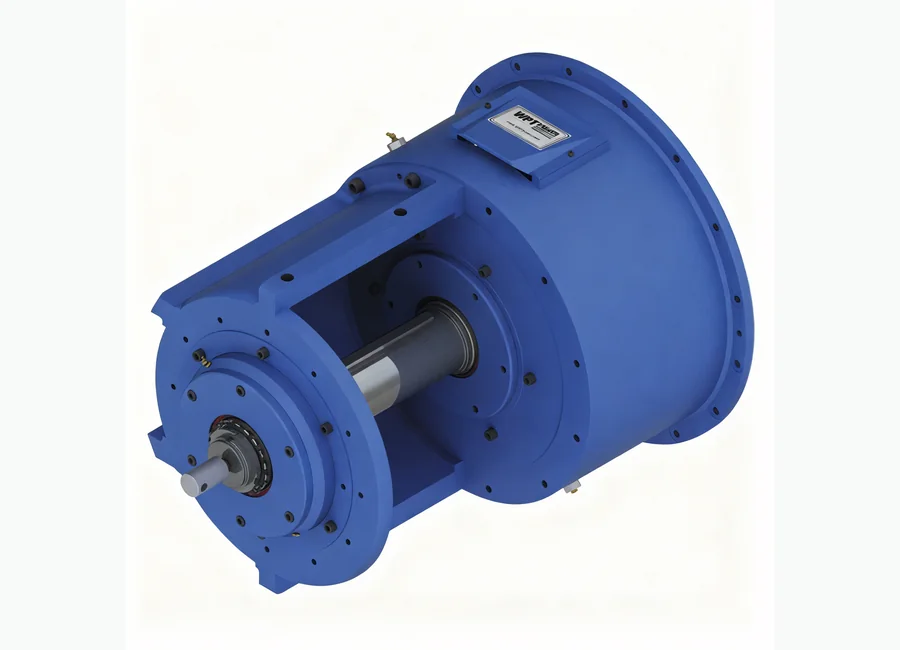
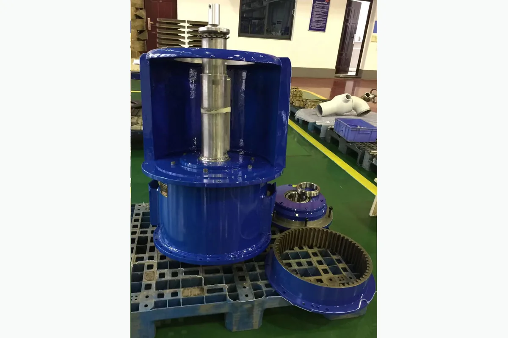

كيفية طلب عرض سعر
- أرسل رقم القطعة أو موديل المعدة.
- أرفق صورة المنتج أو الرسم الفني إن توفر.
- سنراجع المطابقة ونجهز تفاصيل العرض.
ملحقات أجهزة الحفر وونش الحفر
قابض احتكاك WPT Type 1 PTO لصيانة أجهزة الحفر وونش الحفر وأنظمة الرفع والمعدات الدوارة ومشاريع الاستبدال في حقول النفط. يمكن للمشتري إرسال رقم القطعة أو موديل المعدة أو صورة المنتج أو الرسم الفني للحصول على عرض سعر.

WPT Type 1 PTO احتكاك قابض لمشاريع صيانة واستبدال معدات حقول النفط. يمكن للمشتري إرسال رقم القطعة أو موديل المعدة أو صورة المنتج أو الرسم الفني لطلب عرض سعر.
دعم مطابقة المواصفات وتغليف التصدير والتواصل عبر واتساب والبريد الإلكتروني لمشتري حقول النفط.
الوصف
الصور المخصصة لمواد الوصف تظهر هنا ولا تستخدم كصورة بطاقة المنتج.

مطابقة رقم القطعة
احتوت مواد المصدر على أرقام مرجعية، لكن أسماء الجدول الأصلي لم تكن موثوقة بما يكفي للنشر المباشر. تم الاحتفاظ بالأرقام للمطابقة وتأكيد عرض السعر.
أرسل رقم OEM أو موديل المضخة أو موديل الجهاز أو صورة المنتج أو الرسم الفني. ندعم مطابقة رقم القطعة ومطابقة الرسوم ومطابقة العينة لقطع غيار أجهزة الحفر ومضخات الطين والونشات والهيدروليك ومعدات رأس البئر.
| اسم القطعة / المكوّن | رقم مرجعي / كود موديل | المعدة المناسبة | ملاحظات |
|---|---|---|---|
| قابض احتكاك WPT Type 1 PTO - مكوّن | 513348-01 | ملحقات أجهزة الحفر وونش الحفر | رقم مرجعي محفوظ من المصدر. يجب تأكيده باستخدام موديل المعدة أو صورة المنتج أو الرسم الفني قبل عرض السعر. |
| قابض احتكاك WPT Type 1 PTO - مكوّن | 24WCB2 | ملحقات أجهزة الحفر وونش الحفر | رقم مرجعي محفوظ من المصدر. يجب تأكيده باستخدام موديل المعدة أو صورة المنتج أو الرسم الفني قبل عرض السعر. |
| قابض احتكاك WPT Type 1 PTO - مكوّن | 513985-01 513284-01 | ملحقات أجهزة الحفر وونش الحفر | رقم مرجعي محفوظ من المصدر. يجب تأكيده باستخدام موديل المعدة أو صورة المنتج أو الرسم الفني قبل عرض السعر. |
| قابض احتكاك WPT Type 1 PTO - مكوّن | 36WCB2 | ملحقات أجهزة الحفر وونش الحفر | رقم مرجعي محفوظ من المصدر. يجب تأكيده باستخدام موديل المعدة أو صورة المنتج أو الرسم الفني قبل عرض السعر. |
| قابض احتكاك WPT Type 1 PTO - مكوّن | 513337 | ملحقات أجهزة الحفر وونش الحفر | رقم مرجعي محفوظ من المصدر. يجب تأكيده باستخدام موديل المعدة أو صورة المنتج أو الرسم الفني قبل عرض السعر. |
| قابض احتكاك WPT Type 1 PTO - مكوّن | 513986 512815 | ملحقات أجهزة الحفر وونش الحفر | رقم مرجعي محفوظ من المصدر. يجب تأكيده باستخدام موديل المعدة أو صورة المنتج أو الرسم الفني قبل عرض السعر. |
| قابض احتكاك WPT Type 1 PTO - مكوّن | 508459 | ملحقات أجهزة الحفر وونش الحفر | رقم مرجعي محفوظ من المصدر. يجب تأكيده باستخدام موديل المعدة أو صورة المنتج أو الرسم الفني قبل عرض السعر. |
| قابض احتكاك WPT Type 1 PTO - مكوّن | 416527 414026 | ملحقات أجهزة الحفر وونش الحفر | رقم مرجعي محفوظ من المصدر. يجب تأكيده باستخدام موديل المعدة أو صورة المنتج أو الرسم الفني قبل عرض السعر. |
| قابض احتكاك WPT Type 1 PTO - مكوّن | 000153X0642 | ملحقات أجهزة الحفر وونش الحفر | رقم مرجعي محفوظ من المصدر. يجب تأكيده باستخدام موديل المعدة أو صورة المنتج أو الرسم الفني قبل عرض السعر. |
| قابض احتكاك WPT Type 1 PTO - مكوّن | 000153X0843 000153X0842 | ملحقات أجهزة الحفر وونش الحفر | رقم مرجعي محفوظ من المصدر. يجب تأكيده باستخدام موديل المعدة أو صورة المنتج أو الرسم الفني قبل عرض السعر. |
| قابض احتكاك WPT Type 1 PTO - مكوّن | 000153X0685 | ملحقات أجهزة الحفر وونش الحفر | رقم مرجعي محفوظ من المصدر. يجب تأكيده باستخدام موديل المعدة أو صورة المنتج أو الرسم الفني قبل عرض السعر. |
| قابض احتكاك WPT Type 1 PTO - مكوّن | 000153X0844 | ملحقات أجهزة الحفر وونش الحفر | رقم مرجعي محفوظ من المصدر. يجب تأكيده باستخدام موديل المعدة أو صورة المنتج أو الرسم الفني قبل عرض السعر. |
| قابض احتكاك WPT Type 1 PTO - مكوّن | 000245 x 0069 | ملحقات أجهزة الحفر وونش الحفر | رقم مرجعي محفوظ من المصدر. يجب تأكيده باستخدام موديل المعدة أو صورة المنتج أو الرسم الفني قبل عرض السعر. |
| قابض احتكاك WPT Type 1 PTO - مكوّن | 124WCB2 | ملحقات أجهزة الحفر وونش الحفر | رقم مرجعي محفوظ من المصدر. يجب تأكيده باستخدام موديل المعدة أو صورة المنتج أو الرسم الفني قبل عرض السعر. |
| قابض احتكاك WPT Type 1 PTO - مكوّن | 307111-04 | ملحقات أجهزة الحفر وونش الحفر | رقم مرجعي محفوظ من المصدر. يجب تأكيده باستخدام موديل المعدة أو صورة المنتج أو الرسم الفني قبل عرض السعر. |
| قابض احتكاك WPT Type 1 PTO - مكوّن | 136WCB2 | ملحقات أجهزة الحفر وونش الحفر | رقم مرجعي محفوظ من المصدر. يجب تأكيده باستخدام موديل المعدة أو صورة المنتج أو الرسم الفني قبل عرض السعر. |
| قابض احتكاك WPT Type 1 PTO - مكوّن | 000245 x 0071 | ملحقات أجهزة الحفر وونش الحفر | رقم مرجعي محفوظ من المصدر. يجب تأكيده باستخدام موديل المعدة أو صورة المنتج أو الرسم الفني قبل عرض السعر. |
| قابض احتكاك WPT Type 1 PTO - مكوّن | 224WCB2 | ملحقات أجهزة الحفر وونش الحفر | رقم مرجعي محفوظ من المصدر. يجب تأكيده باستخدام موديل المعدة أو صورة المنتج أو الرسم الفني قبل عرض السعر. |
| قابض احتكاك WPT Type 1 PTO - مكوّن | 307111-10 | ملحقات أجهزة الحفر وونش الحفر | رقم مرجعي محفوظ من المصدر. يجب تأكيده باستخدام موديل المعدة أو صورة المنتج أو الرسم الفني قبل عرض السعر. |
| قابض احتكاك WPT Type 1 PTO - مكوّن | 236WCB2 | ملحقات أجهزة الحفر وونش الحفر | رقم مرجعي محفوظ من المصدر. يجب تأكيده باستخدام موديل المعدة أو صورة المنتج أو الرسم الفني قبل عرض السعر. |
| قابض احتكاك WPT Type 1 PTO - مكوّن | 000245 x 0081 | ملحقات أجهزة الحفر وونش الحفر | رقم مرجعي محفوظ من المصدر. يجب تأكيده باستخدام موديل المعدة أو صورة المنتج أو الرسم الفني قبل عرض السعر. |
| قابض احتكاك WPT Type 1 PTO - مكوّن | 324WCB2 | ملحقات أجهزة الحفر وونش الحفر | رقم مرجعي محفوظ من المصدر. يجب تأكيده باستخدام موديل المعدة أو صورة المنتج أو الرسم الفني قبل عرض السعر. |
| قابض احتكاك WPT Type 1 PTO - مكوّن | 307111-05 | ملحقات أجهزة الحفر وونش الحفر | رقم مرجعي محفوظ من المصدر. يجب تأكيده باستخدام موديل المعدة أو صورة المنتج أو الرسم الفني قبل عرض السعر. |
| قابض احتكاك WPT Type 1 PTO - مكوّن | 336WCB2 | ملحقات أجهزة الحفر وونش الحفر | رقم مرجعي محفوظ من المصدر. يجب تأكيده باستخدام موديل المعدة أو صورة المنتج أو الرسم الفني قبل عرض السعر. |
| قابض احتكاك WPT Type 1 PTO - مكوّن | 000245 x 0082 | ملحقات أجهزة الحفر وونش الحفر | رقم مرجعي محفوظ من المصدر. يجب تأكيده باستخدام موديل المعدة أو صورة المنتج أو الرسم الفني قبل عرض السعر. |
| قابض احتكاك WPT Type 1 PTO - مكوّن | 424WCB2 | ملحقات أجهزة الحفر وونش الحفر | رقم مرجعي محفوظ من المصدر. يجب تأكيده باستخدام موديل المعدة أو صورة المنتج أو الرسم الفني قبل عرض السعر. |
| قابض احتكاك WPT Type 1 PTO - مكوّن | 307111-07 | ملحقات أجهزة الحفر وونش الحفر | رقم مرجعي محفوظ من المصدر. يجب تأكيده باستخدام موديل المعدة أو صورة المنتج أو الرسم الفني قبل عرض السعر. |
| قابض احتكاك WPT Type 1 PTO - مكوّن | 436WCB2 | ملحقات أجهزة الحفر وونش الحفر | رقم مرجعي محفوظ من المصدر. يجب تأكيده باستخدام موديل المعدة أو صورة المنتج أو الرسم الفني قبل عرض السعر. |
| قابض احتكاك WPT Type 1 PTO - مكوّن | 513964-01 513964-02 | ملحقات أجهزة الحفر وونش الحفر | رقم مرجعي محفوظ من المصدر. يجب تأكيده باستخدام موديل المعدة أو صورة المنتج أو الرسم الفني قبل عرض السعر. |
| قابض احتكاك WPT Type 1 PTO - مكوّن | 513990 513965-02 | ملحقات أجهزة الحفر وونش الحفر | رقم مرجعي محفوظ من المصدر. يجب تأكيده باستخدام موديل المعدة أو صورة المنتج أو الرسم الفني قبل عرض السعر. |
| قابض احتكاك WPT Type 1 PTO - مكوّن | 508725 512825 | ملحقات أجهزة الحفر وونش الحفر | رقم مرجعي محفوظ من المصدر. يجب تأكيده باستخدام موديل المعدة أو صورة المنتج أو الرسم الفني قبل عرض السعر. |
| قابض احتكاك WPT Type 1 PTO - مكوّن | 513658 513675 | ملحقات أجهزة الحفر وونش الحفر | رقم مرجعي محفوظ من المصدر. يجب تأكيده باستخدام موديل المعدة أو صورة المنتج أو الرسم الفني قبل عرض السعر. |
| قابض احتكاك WPT Type 1 PTO - مكوّن | 510745 | ملحقات أجهزة الحفر وونش الحفر | رقم مرجعي محفوظ من المصدر. يجب تأكيده باستخدام موديل المعدة أو صورة المنتج أو الرسم الفني قبل عرض السعر. |
| قابض احتكاك WPT Type 1 PTO - مكوّن | 513667 | ملحقات أجهزة الحفر وونش الحفر | رقم مرجعي محفوظ من المصدر. يجب تأكيده باستخدام موديل المعدة أو صورة المنتج أو الرسم الفني قبل عرض السعر. |
| قابض احتكاك WPT Type 1 PTO - مكوّن | 306542-05 | ملحقات أجهزة الحفر وونش الحفر | رقم مرجعي محفوظ من المصدر. يجب تأكيده باستخدام موديل المعدة أو صورة المنتج أو الرسم الفني قبل عرض السعر. |
| قابض احتكاك WPT Type 1 PTO - مكوّن | 308204-07 | ملحقات أجهزة الحفر وونش الحفر | رقم مرجعي محفوظ من المصدر. يجب تأكيده باستخدام موديل المعدة أو صورة المنتج أو الرسم الفني قبل عرض السعر. |
| قابض احتكاك WPT Type 1 PTO - مكوّن | 306542-20 | ملحقات أجهزة الحفر وونش الحفر | رقم مرجعي محفوظ من المصدر. يجب تأكيده باستخدام موديل المعدة أو صورة المنتج أو الرسم الفني قبل عرض السعر. |
| قابض احتكاك WPT Type 1 PTO - مكوّن | 308204-02 | ملحقات أجهزة الحفر وونش الحفر | رقم مرجعي محفوظ من المصدر. يجب تأكيده باستخدام موديل المعدة أو صورة المنتج أو الرسم الفني قبل عرض السعر. |
| قابض احتكاك WPT Type 1 PTO - مكوّن | 306542-23 | ملحقات أجهزة الحفر وونش الحفر | رقم مرجعي محفوظ من المصدر. يجب تأكيده باستخدام موديل المعدة أو صورة المنتج أو الرسم الفني قبل عرض السعر. |
| قابض احتكاك WPT Type 1 PTO - مكوّن | 308204-04 | ملحقات أجهزة الحفر وونش الحفر | رقم مرجعي محفوظ من المصدر. يجب تأكيده باستخدام موديل المعدة أو صورة المنتج أو الرسم الفني قبل عرض السعر. |
| قابض احتكاك WPT Type 1 PTO - مكوّن | 306542-24 | ملحقات أجهزة الحفر وونش الحفر | رقم مرجعي محفوظ من المصدر. يجب تأكيده باستخدام موديل المعدة أو صورة المنتج أو الرسم الفني قبل عرض السعر. |
| قابض احتكاك WPT Type 1 PTO - مكوّن | 308204-05 | ملحقات أجهزة الحفر وونش الحفر | رقم مرجعي محفوظ من المصدر. يجب تأكيده باستخدام موديل المعدة أو صورة المنتج أو الرسم الفني قبل عرض السعر. |
| قابض احتكاك WPT Type 1 PTO - مكوّن | 513348-03 | ملحقات أجهزة الحفر وونش الحفر | رقم مرجعي محفوظ من المصدر. يجب تأكيده باستخدام موديل المعدة أو صورة المنتج أو الرسم الفني قبل عرض السعر. |
| قابض احتكاك WPT Type 1 PTO - مكوّن | 513985-03 513284-03 | ملحقات أجهزة الحفر وونش الحفر | رقم مرجعي محفوظ من المصدر. يجب تأكيده باستخدام موديل المعدة أو صورة المنتج أو الرسم الفني قبل عرض السعر. |
| قابض احتكاك WPT Type 1 PTO - مكوّن | 513345 | ملحقات أجهزة الحفر وونش الحفر | رقم مرجعي محفوظ من المصدر. يجب تأكيده باستخدام موديل المعدة أو صورة المنتج أو الرسم الفني قبل عرض السعر. |
| قابض احتكاك WPT Type 1 PTO - مكوّن | 512860 | ملحقات أجهزة الحفر وونش الحفر | رقم مرجعي محفوظ من المصدر. يجب تأكيده باستخدام موديل المعدة أو صورة المنتج أو الرسم الفني قبل عرض السعر. |
| قابض احتكاك WPT Type 1 PTO - مكوّن | 000153 x 0641 | ملحقات أجهزة الحفر وونش الحفر | رقم مرجعي محفوظ من المصدر. يجب تأكيده باستخدام موديل المعدة أو صورة المنتج أو الرسم الفني قبل عرض السعر. |
| قابض احتكاك WPT Type 1 PTO - مكوّن | 000067 x 0042 | ملحقات أجهزة الحفر وونش الحفر | رقم مرجعي محفوظ من المصدر. يجب تأكيده باستخدام موديل المعدة أو صورة المنتج أو الرسم الفني قبل عرض السعر. |
| قابض احتكاك WPT Type 1 PTO - مكوّن | 000110 x 0073 | ملحقات أجهزة الحفر وونش الحفر | رقم مرجعي محفوظ من المصدر. يجب تأكيده باستخدام موديل المعدة أو صورة المنتج أو الرسم الفني قبل عرض السعر. |
| قابض احتكاك WPT Type 1 PTO - مكوّن | 000110 x 0075 | ملحقات أجهزة الحفر وونش الحفر | رقم مرجعي محفوظ من المصدر. يجب تأكيده باستخدام موديل المعدة أو صورة المنتج أو الرسم الفني قبل عرض السعر. |
| قابض احتكاك WPT Type 1 PTO - مكوّن | 513264 | ملحقات أجهزة الحفر وونش الحفر | رقم مرجعي محفوظ من المصدر. يجب تأكيده باستخدام موديل المعدة أو صورة المنتج أو الرسم الفني قبل عرض السعر. |
| قابض احتكاك WPT Type 1 PTO - مكوّن | 513988 512809 | ملحقات أجهزة الحفر وونش الحفر | رقم مرجعي محفوظ من المصدر. يجب تأكيده باستخدام موديل المعدة أو صورة المنتج أو الرسم الفني قبل عرض السعر. |
| قابض احتكاك WPT Type 1 PTO - مكوّن | 000402x0023 | ملحقات أجهزة الحفر وونش الحفر | رقم مرجعي محفوظ من المصدر. يجب تأكيده باستخدام موديل المعدة أو صورة المنتج أو الرسم الفني قبل عرض السعر. |
| قابض احتكاك WPT Type 1 PTO - مكوّن | 000402x0005 | ملحقات أجهزة الحفر وونش الحفر | رقم مرجعي محفوظ من المصدر. يجب تأكيده باستخدام موديل المعدة أو صورة المنتج أو الرسم الفني قبل عرض السعر. |
| قابض احتكاك WPT Type 1 PTO - مكوّن | 000402x0024 | ملحقات أجهزة الحفر وونش الحفر | رقم مرجعي محفوظ من المصدر. يجب تأكيده باستخدام موديل المعدة أو صورة المنتج أو الرسم الفني قبل عرض السعر. |
| قابض احتكاك WPT Type 1 PTO - مكوّن | 000402x0006 | ملحقات أجهزة الحفر وونش الحفر | رقم مرجعي محفوظ من المصدر. يجب تأكيده باستخدام موديل المعدة أو صورة المنتج أو الرسم الفني قبل عرض السعر. |
| قابض احتكاك WPT Type 1 PTO - مكوّن | 411672 | ملحقات أجهزة الحفر وونش الحفر | رقم مرجعي محفوظ من المصدر. يجب تأكيده باستخدام موديل المعدة أو صورة المنتج أو الرسم الفني قبل عرض السعر. |
| قابض احتكاك WPT Type 1 PTO - مكوّن | 416538 415871 | ملحقات أجهزة الحفر وونش الحفر | رقم مرجعي محفوظ من المصدر. يجب تأكيده باستخدام موديل المعدة أو صورة المنتج أو الرسم الفني قبل عرض السعر. |
| قابض احتكاك WPT Type 1 PTO - مكوّن | 410970 | ملحقات أجهزة الحفر وونش الحفر | رقم مرجعي محفوظ من المصدر. يجب تأكيده باستخدام موديل المعدة أو صورة المنتج أو الرسم الفني قبل عرض السعر. |
| قابض احتكاك WPT Type 1 PTO - مكوّن | 416536 416069 | ملحقات أجهزة الحفر وونش الحفر | رقم مرجعي محفوظ من المصدر. يجب تأكيده باستخدام موديل المعدة أو صورة المنتج أو الرسم الفني قبل عرض السعر. |
| قابض احتكاك WPT Type 1 PTO - مكوّن | 412433 | ملحقات أجهزة الحفر وونش الحفر | رقم مرجعي محفوظ من المصدر. يجب تأكيده باستخدام موديل المعدة أو صورة المنتج أو الرسم الفني قبل عرض السعر. |
| قابض احتكاك WPT Type 1 PTO - مكوّن | 416535 414054 | ملحقات أجهزة الحفر وونش الحفر | رقم مرجعي محفوظ من المصدر. يجب تأكيده باستخدام موديل المعدة أو صورة المنتج أو الرسم الفني قبل عرض السعر. |
| قابض احتكاك WPT Type 1 PTO - مكوّن | 413195 | ملحقات أجهزة الحفر وونش الحفر | رقم مرجعي محفوظ من المصدر. يجب تأكيده باستخدام موديل المعدة أو صورة المنتج أو الرسم الفني قبل عرض السعر. |
| قابض احتكاك WPT Type 1 PTO - مكوّن | 416537 414132 | ملحقات أجهزة الحفر وونش الحفر | رقم مرجعي محفوظ من المصدر. يجب تأكيده باستخدام موديل المعدة أو صورة المنتج أو الرسم الفني قبل عرض السعر. |
| قابض احتكاك WPT Type 1 PTO - مكوّن | 308396 307989-01 | ملحقات أجهزة الحفر وونش الحفر | رقم مرجعي محفوظ من المصدر. يجب تأكيده باستخدام موديل المعدة أو صورة المنتج أو الرسم الفني قبل عرض السعر. |
| قابض احتكاك WPT Type 1 PTO - مكوّن | 308397 307094 | ملحقات أجهزة الحفر وونش الحفر | رقم مرجعي محفوظ من المصدر. يجب تأكيده باستخدام موديل المعدة أو صورة المنتج أو الرسم الفني قبل عرض السعر. |
| قابض احتكاك WPT Type 1 PTO - مكوّن | 513348-02 | ملحقات أجهزة الحفر وونش الحفر | رقم مرجعي محفوظ من المصدر. يجب تأكيده باستخدام موديل المعدة أو صورة المنتج أو الرسم الفني قبل عرض السعر. |
| قابض احتكاك WPT Type 1 PTO - مكوّن | 513985-02 513284-02 | ملحقات أجهزة الحفر وونش الحفر | رقم مرجعي محفوظ من المصدر. يجب تأكيده باستخدام موديل المعدة أو صورة المنتج أو الرسم الفني قبل عرض السعر. |
| قابض احتكاك WPT Type 1 PTO - مكوّن | 513343 | ملحقات أجهزة الحفر وونش الحفر | رقم مرجعي محفوظ من المصدر. يجب تأكيده باستخدام موديل المعدة أو صورة المنتج أو الرسم الفني قبل عرض السعر. |
| قابض احتكاك WPT Type 1 PTO - مكوّن | 513989 512813 | ملحقات أجهزة الحفر وونش الحفر | رقم مرجعي محفوظ من المصدر. يجب تأكيده باستخدام موديل المعدة أو صورة المنتج أو الرسم الفني قبل عرض السعر. |
| قابض احتكاك WPT Type 1 PTO - مكوّن | 513317 | ملحقات أجهزة الحفر وونش الحفر | رقم مرجعي محفوظ من المصدر. يجب تأكيده باستخدام موديل المعدة أو صورة المنتج أو الرسم الفني قبل عرض السعر. |
| قابض احتكاك WPT Type 1 PTO - مكوّن | 512858 | ملحقات أجهزة الحفر وونش الحفر | رقم مرجعي محفوظ من المصدر. يجب تأكيده باستخدام موديل المعدة أو صورة المنتج أو الرسم الفني قبل عرض السعر. |
| قابض احتكاك WPT Type 1 PTO - مكوّن | 416751-02 307073 | ملحقات أجهزة الحفر وونش الحفر | رقم مرجعي محفوظ من المصدر. يجب تأكيده باستخدام موديل المعدة أو صورة المنتج أو الرسم الفني قبل عرض السعر. |
| قابض احتكاك WPT Type 1 PTO - مكوّن | 416751-01 307175 | ملحقات أجهزة الحفر وونش الحفر | رقم مرجعي محفوظ من المصدر. يجب تأكيده باستخدام موديل المعدة أو صورة المنتج أو الرسم الفني قبل عرض السعر. |
| قابض احتكاك WPT Type 1 PTO - مكوّن | 413107 | ملحقات أجهزة الحفر وونش الحفر | رقم مرجعي محفوظ من المصدر. يجب تأكيده باستخدام موديل المعدة أو صورة المنتج أو الرسم الفني قبل عرض السعر. |
| قابض احتكاك WPT Type 1 PTO - مكوّن | 414032-01 | ملحقات أجهزة الحفر وونش الحفر | رقم مرجعي محفوظ من المصدر. يجب تأكيده باستخدام موديل المعدة أو صورة المنتج أو الرسم الفني قبل عرض السعر. |
| قابض احتكاك WPT Type 1 PTO - مكوّن | 413108 | ملحقات أجهزة الحفر وونش الحفر | رقم مرجعي محفوظ من المصدر. يجب تأكيده باستخدام موديل المعدة أو صورة المنتج أو الرسم الفني قبل عرض السعر. |
| قابض احتكاك WPT Type 1 PTO - مكوّن | 414033-01 | ملحقات أجهزة الحفر وونش الحفر | رقم مرجعي محفوظ من المصدر. يجب تأكيده باستخدام موديل المعدة أو صورة المنتج أو الرسم الفني قبل عرض السعر. |
| قابض احتكاك WPT Type 1 PTO - مكوّن | 000294x407 | ملحقات أجهزة الحفر وونش الحفر | رقم مرجعي محفوظ من المصدر. يجب تأكيده باستخدام موديل المعدة أو صورة المنتج أو الرسم الفني قبل عرض السعر. |
| قابض احتكاك WPT Type 1 PTO - مكوّن | 24/36WCB2 | ملحقات أجهزة الحفر وونش الحفر | رقم مرجعي محفوظ من المصدر. يجب تأكيده باستخدام موديل المعدة أو صورة المنتج أو الرسم الفني قبل عرض السعر. |
| قابض احتكاك WPT Type 1 PTO - مكوّن | 107821B | ملحقات أجهزة الحفر وونش الحفر | رقم مرجعي محفوظ من المصدر. يجب تأكيده باستخدام موديل المعدة أو صورة المنتج أو الرسم الفني قبل عرض السعر. |
| قابض احتكاك WPT Type 1 PTO - مكوّن | 107822B | ملحقات أجهزة الحفر وونش الحفر | رقم مرجعي محفوظ من المصدر. يجب تأكيده باستخدام موديل المعدة أو صورة المنتج أو الرسم الفني قبل عرض السعر. |
| قابض احتكاك WPT Type 1 PTO - مكوّن | 107821BA | ملحقات أجهزة الحفر وونش الحفر | رقم مرجعي محفوظ من المصدر. يجب تأكيده باستخدام موديل المعدة أو صورة المنتج أو الرسم الفني قبل عرض السعر. |
| قابض احتكاك WPT Type 1 PTO - مكوّن | 107822BA | ملحقات أجهزة الحفر وونش الحفر | رقم مرجعي محفوظ من المصدر. يجب تأكيده باستخدام موديل المعدة أو صورة المنتج أو الرسم الفني قبل عرض السعر. |
| قابض احتكاك WPT Type 1 PTO - مكوّن | 107821BB | ملحقات أجهزة الحفر وونش الحفر | رقم مرجعي محفوظ من المصدر. يجب تأكيده باستخدام موديل المعدة أو صورة المنتج أو الرسم الفني قبل عرض السعر. |
| قابض احتكاك WPT Type 1 PTO - مكوّن | 107822BB | ملحقات أجهزة الحفر وونش الحفر | رقم مرجعي محفوظ من المصدر. يجب تأكيده باستخدام موديل المعدة أو صورة المنتج أو الرسم الفني قبل عرض السعر. |
| قابض احتكاك WPT Type 1 PTO - مكوّن | 107821BC | ملحقات أجهزة الحفر وونش الحفر | رقم مرجعي محفوظ من المصدر. يجب تأكيده باستخدام موديل المعدة أو صورة المنتج أو الرسم الفني قبل عرض السعر. |
| قابض احتكاك WPT Type 1 PTO - مكوّن | 107822BC | ملحقات أجهزة الحفر وونش الحفر | رقم مرجعي محفوظ من المصدر. يجب تأكيده باستخدام موديل المعدة أو صورة المنتج أو الرسم الفني قبل عرض السعر. |
| قابض احتكاك WPT Type 1 PTO - مكوّن | 107727A | ملحقات أجهزة الحفر وونش الحفر | رقم مرجعي محفوظ من المصدر. يجب تأكيده باستخدام موديل المعدة أو صورة المنتج أو الرسم الفني قبل عرض السعر. |
| قابض احتكاك WPT Type 1 PTO - مكوّن | 107662A | ملحقات أجهزة الحفر وونش الحفر | رقم مرجعي محفوظ من المصدر. يجب تأكيده باستخدام موديل المعدة أو صورة المنتج أو الرسم الفني قبل عرض السعر. |
| قابض احتكاك WPT Type 1 PTO - مكوّن | 107727E | ملحقات أجهزة الحفر وونش الحفر | رقم مرجعي محفوظ من المصدر. يجب تأكيده باستخدام موديل المعدة أو صورة المنتج أو الرسم الفني قبل عرض السعر. |
| قابض احتكاك WPT Type 1 PTO - مكوّن | 107662E | ملحقات أجهزة الحفر وونش الحفر | رقم مرجعي محفوظ من المصدر. يجب تأكيده باستخدام موديل المعدة أو صورة المنتج أو الرسم الفني قبل عرض السعر. |
| قابض احتكاك WPT Type 1 PTO - مكوّن | 107727C | ملحقات أجهزة الحفر وونش الحفر | رقم مرجعي محفوظ من المصدر. يجب تأكيده باستخدام موديل المعدة أو صورة المنتج أو الرسم الفني قبل عرض السعر. |
| قابض احتكاك WPT Type 1 PTO - مكوّن | 107662C | ملحقات أجهزة الحفر وونش الحفر | رقم مرجعي محفوظ من المصدر. يجب تأكيده باستخدام موديل المعدة أو صورة المنتج أو الرسم الفني قبل عرض السعر. |
| قابض احتكاك WPT Type 1 PTO - مكوّن | 107821C | ملحقات أجهزة الحفر وونش الحفر | رقم مرجعي محفوظ من المصدر. يجب تأكيده باستخدام موديل المعدة أو صورة المنتج أو الرسم الفني قبل عرض السعر. |
| قابض احتكاك WPT Type 1 PTO - مكوّن | 107822C | ملحقات أجهزة الحفر وونش الحفر | رقم مرجعي محفوظ من المصدر. يجب تأكيده باستخدام موديل المعدة أو صورة المنتج أو الرسم الفني قبل عرض السعر. |
| قابض احتكاك WPT Type 1 PTO - مكوّن | 107821CA | ملحقات أجهزة الحفر وونش الحفر | رقم مرجعي محفوظ من المصدر. يجب تأكيده باستخدام موديل المعدة أو صورة المنتج أو الرسم الفني قبل عرض السعر. |
| قابض احتكاك WPT Type 1 PTO - مكوّن | 107822CA | ملحقات أجهزة الحفر وونش الحفر | رقم مرجعي محفوظ من المصدر. يجب تأكيده باستخدام موديل المعدة أو صورة المنتج أو الرسم الفني قبل عرض السعر. |
| قابض احتكاك WPT Type 1 PTO - مكوّن | 107821CB | ملحقات أجهزة الحفر وونش الحفر | رقم مرجعي محفوظ من المصدر. يجب تأكيده باستخدام موديل المعدة أو صورة المنتج أو الرسم الفني قبل عرض السعر. |
| قابض احتكاك WPT Type 1 PTO - مكوّن | 107822CB | ملحقات أجهزة الحفر وونش الحفر | رقم مرجعي محفوظ من المصدر. يجب تأكيده باستخدام موديل المعدة أو صورة المنتج أو الرسم الفني قبل عرض السعر. |
| قابض احتكاك WPT Type 1 PTO - مكوّن | 107821CC | ملحقات أجهزة الحفر وونش الحفر | رقم مرجعي محفوظ من المصدر. يجب تأكيده باستخدام موديل المعدة أو صورة المنتج أو الرسم الفني قبل عرض السعر. |
| قابض احتكاك WPT Type 1 PTO - مكوّن | 107822CC | ملحقات أجهزة الحفر وونش الحفر | رقم مرجعي محفوظ من المصدر. يجب تأكيده باستخدام موديل المعدة أو صورة المنتج أو الرسم الفني قبل عرض السعر. |
استفسار
للتسعير السريع، أرسل رقم القطعة أو موديل المضخة أو موديل جهاز الحفر أو صورة المنتج أو الرسم الفني.